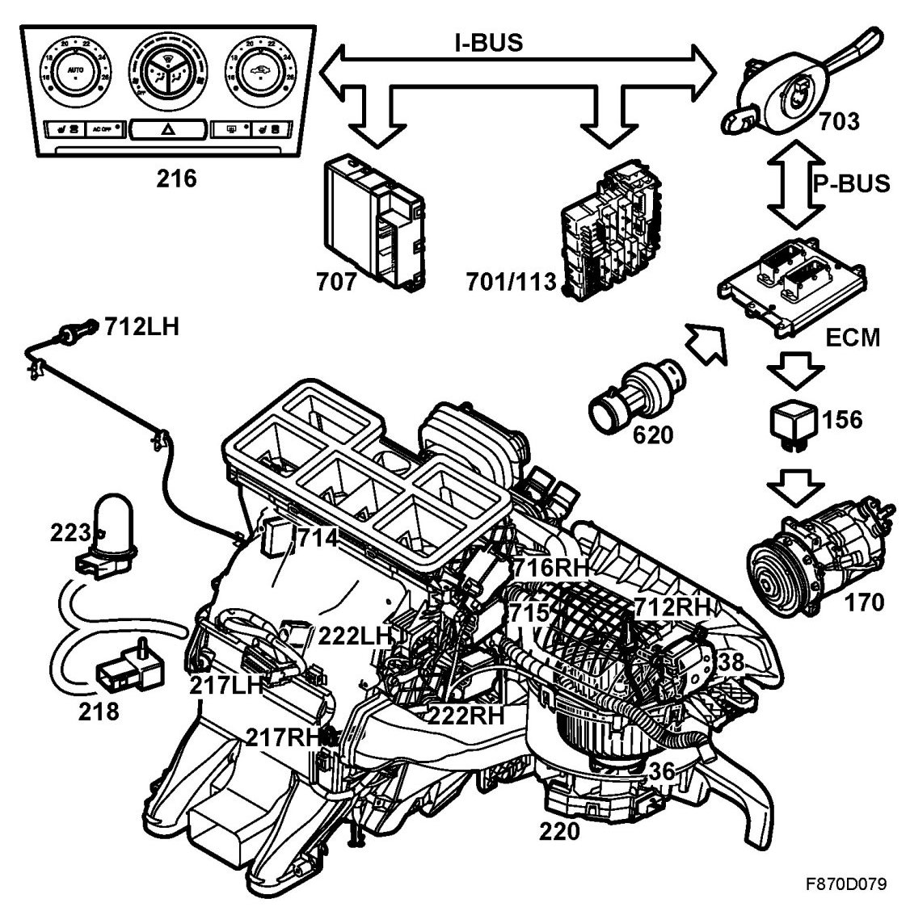

Brief Description
Brief Description
Overview

- Automatic Climate Control (216)
- Temperature sensor, cabin air (218)
- Solar sensor (223)
- Mixed air temperature sensor, right, floor (217RH)
- Mixed air temperature sensor, right panel (217RH)
- Mixed air temperature sensor, left, floor (217LH)
- Mixed air temperature sensor, left, panel (712LH)
- Ventilation fan control (220)
- Motor, ventilation fan (36)
- Motor, air recirculation flap (38)
- Motor, air distribution, defrost (714)
- Motor, air distribution, floor (715)
- Motor, air distribution, vent, right (716RH)
- Motor, air mixing damper, right (222RH)
- Motor, air-mixing damper, left (222LH)
- ECM
- Pressure sensor A/C (620)
- A/C relay (156)
- Compressor, A/C (170)
- REC (701)
- Rear window electric heater relay (113)
- BCM (707)
- Unit, steering column assembly, CIM (703)
Description
The main functions of the ACC system are to control the climate control unit and ensure that the most comfortable conditions are achieved and maintained as soon as possible after starting. Separate temperature settings for the driver and passenger can be selected. The ACC unit consists of a panel with display and buttons as well as a built-in control module. Hazard flashers and separate front seat heaters can be activated with the panel.
Two stepping motors are used to regulate cabin temperature in each temperature zone. The stepping motors are connected to dampers which mix warm and cool air. The heating and ventilation unit contains separate dampers for air distribution to the defrost, floor and panel vents. Each damper is rotated with a stepping motor that is supplied with power by the control module. This design allows air flow to all distribution points simultaneously. When the driver zone requires warmth, defrost+floor is selected; when cooling is required, the panel damper is also opened. When the car is started in cold weather, defrost is selected initially.
The fan is controlled by a control unit. Fan current is lowest when neither zone requires heat or cooling. During starts in cold weather, the value is determined by the coolant temperature and the ambient temperature. Fan current is limited if the engine is not running.
A direct current motor rotates the recirculation flap. Recirculation is selected if a zone requires excessive cooling at high outdoor temperatures or if there is a risk for engine overheating. The control module requests A/C compressor cut-in if the outdoor temperature exceeds 0 degree C and A/C OFF is not selected.